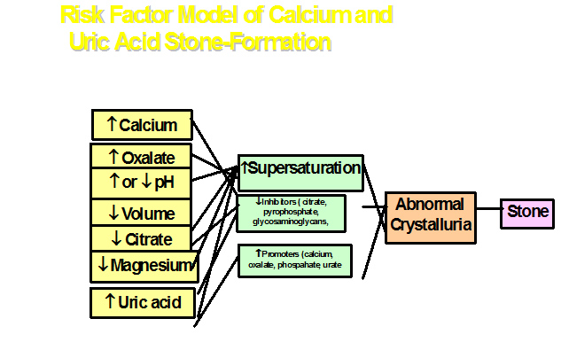
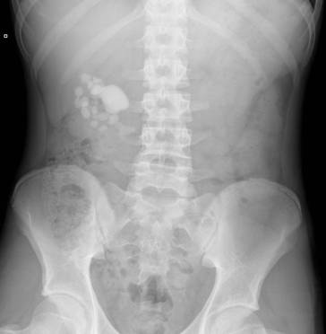
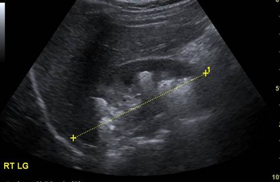
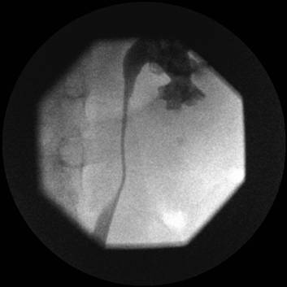
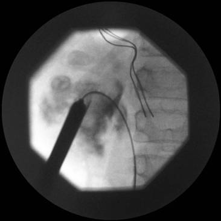

PAEDIATRIC UROLITHIASIS
Prasad Godbole
Sheffield Children's NHS Foundation Trust, Sheffield, UK
→ Enlace a la versión en español

→ Enlace a la versión en español
Introduction:
Pediatric urolithiasis is uncommon in western Europe with an incidence in the U.K. reported to be less than 2/million population but much more frequently encountered in the stone belt. In endemic urolithiasis, bladder calculi were much more prevalent but with industrialisation, this incidence is decreasing.
Epidemiology:
Urinary tract calculi are being recognised with increasing frequency with boys being affected more than girls. The vast majority of stones are seen in the upper urinary tract .
Pathophysiology
The pathophysiology of stones is multifactorial and is determined by a combination of urine flow and volume, crystal saturation and the urinary pH. Any factors affecting these components may give rise to urinary tract stones (see Figure 1 below)

Supersaturation is the first prerequisite for stone formation. Crystallisation occurs due to supersdaturation in association with an imbalance between promoters (increase) and inhibitors (decrease). Promoters are mainly calcium, oxalate, phosphate and urate. Inhibitors are citrate, ,pyrophosphate, glycosaminoglycans and glycoproteins. Following supersaturation, crystals form in the lumen of the tubules and may aggregate. If there are underlying metabolic disorders or dietary causes, this may cause supersaturation. Poor diuresis may aggravate the supersaturation. Urinary infection, most commonly due to urease producing organisms cause alkalinisation of the urine and crystallisation/supersaturation of several compounds such as struvite or carbapatite and ammonium urate.
Stones may be encountered early in the postnatal period in premature babies who have been administered furosemide for their chronic lung disease. While not strictly stones, this condition is known as nephrocalcinosis with crystals being deposited in the medullary interstitium rather than the collecting system.
Diagnosis: The diagnosis of stones in children requires a high index of suspicion as the presenting features may be varied. In any age group, the symptoms may be those of a urinary tract infection with dysuria, frequency, hematuria and passage of grit or small stones or matrix. This may be accompanied by pain. In babies, stones may manifest themselves with lethargy, irritability, poor feeding, pyrexia.
The confirmation of diagnosis rests on appropriate imaging. In children, the main imaging modality is the renal ultrasound (US) along with a plain film KUB. The US is sensitive, specific and can detect stones throughout the urinary tract. In the kidney, it can demonstrate the location of the stones in the collecting system. However it is operator dependent and may miss stones in the mid ureter or distal ureter especially if obscured by bowel gas and if the bladder is empty. The plain KUB film is a useful adjunct to detect stones. However faecal loading/bowel gas may obscure the view and hence the plain Xray is not as sensitive as the US.
Other imaging modalities can be used in those cases where there is a high index of suspicion but no stone is visulaised by the combinationof an US and KUB. In such cases a unenhanced spiral CT may demonstrate the presence of a stone. Functional imaging prior to any intervention is important and the author routinely performs a DMSA scan prior to any intervention. At the time of the DMSA scan, it is worthwhile obtaining an IVU to demonstrate the calyceal anatomy as this may affect the approach especially if a PCNL is being considered.
Nature of stones: The nature and composition of stones can influence the choice of technique and the success of the procedure. Cystine stones are notoriously hard to disintegrate and the stones are faintly opaque. Struvite stones usually have enough calcium phosphate incorporated to make them opaque. Uric acid stones are radioluscent and calcium oxalate stones are the most radioopaque.
Evaluation:
If a stone is suspected, a full history including a dietary history should be carried out. A family history of metabolic disorders or stones is important. Any urological history that may predispose to stone formation such as a augmentation cystoplasty should be addressed. Laboratory evaluation includes urine bacteriology and biochemical analysis of blood and urine. Blood sampling should include electrolytes ( including creatinine), calcium, phosphate and uric acid. Urine analysis is usually performed on a 24 hour urine collection although most labs can now perform the evaluation on a spot sample of urine. Urine should be analysed for calcium, oxalate, uric acid, citrate and urinary sodium and potassium. Calcium craetinine ration and oxalate creatinine ration can be measured.
The most important element of the evaluation is the analysis of the chemical composition of the stone to determine etiology.
Non operative management
In children with stones, surgical removal with complete clearance of the stone burden is the primary aim of intervention. The only indication for non operative intervention would be following removal of a large stone with a minute residual fragment which may be expected to pass spontaneously these are sometimes called ‘clinically insignificant residual fragments’. Similarily, in nephrocalcinosis or calcification in the interstitium, a watch and wait policy may be implemented as in most cases, these calcific deposits may not progress or in the the case of nephrocacinosis, may resolve. A small ureteric stone less than 4mm in diameter can be watched in the absence of symptoms and proximal dilatation in the anticipation of spontaneous passage. Medical management as is in adult practice is for the use of alpha blockers such as tamsulosin (Flomax) to relax the UVJ and thereby allowing the stone to pass.
Operative management
Minimal access techniques: PCNL, ESWL, URS, laparoscopy
Open surgery: Open surgery is rarely indicated for paediatric urolithiasis as the majority of the stones can be managed by minimally invasive techniques either in isolation or in combination. In certain cases, open surgery may be indicated for example in a UPJ obstruction with secondary stone formation, but even in such situations, laparosocopy may be used with excellent visualisation.
PCNL: Most of the experience in PCNL has been obtained from its use in adults. However improvement in instrumentation and smaller size of instruments has allowed this technique to be used in most children. PCNL can be used as monotherapy or in conjunction with ESWL.
Indications
Hard stone not amenable to disintegration by ESWL
Preoperative imaging
US and Plain flm KUB: this allows accurate localisation of the stone in the kidney and can help plan the puncture. (figure 2a and b)
IVU: This demonstrates the calcyceal anatomy and the location of the stones within the collecting system. Anatomical variations such as duplex systems or bifid systems can also be detected preoperatively.
DMSA: through the same injection site at the same time as the IVU gives the function of the kidney. Where the kidney is poorly functioning (<10%), nephrectomy may be the alternative and better intervention.
Technique: Video 1
ESWL (Extracorporeal shock wave lithotripsy)
Generation of a shock wave by several techniques and the focusing of these waves no a single point has been used in the management of stones for the last two decades. The first ESWL was performed in Germany in 1980. The principle behind the ESWL is threefold
Electrohydraulic lithotripter:
This uses the spark gap principle to generate the shock wave. Two electrodes are placed close together and a high energy current passed between them. This creates a spark which causes development of a shock wave in the surrounding water. This can be focused on a target to disintegrate the stone.
The procedure requires that the patient be submerged in a water bath and the equipment is bulky and cumbersome. Furthermore the energy levels can fluctuate between shock waves.
Piezoelectric lithotripter
This uses piezoelectric ceramic crystals arranged in a sphere which are charged and discharged to cause creation of the shock wave. This can be focused on the target with a very high level of accuracy. However the energy delivered is relatively small necessitating longer treatment times and sometimes repeated procedures for complete stone fragmentation.
Electromagnetic lithotripter
This uses two coils with magnetic fields passed through them in opposite directions. These opposing magnetic fields cause the laminar membrane adjacent to the coil to vibrate thereby producing the shock wave. The wave can be focused through a concave lens or via a cylindrical lens. The advantage of this system is that the focusing adjuncts such as the ultrasound and the fluoroscopy unit are integral to the shock wave generating device. This the most commonly used lithotripter.
Cavitation
The shock waves cause stone disintegration by cavitation. This commences at the point of entry and creates microbubbles by evaporation of the air within the stone. These microbubbles collapse and coalesce with new microbubbles forming a secondary wave. This process progresses through the entire stone till fragmentation occurs. This process also occurs at the interface of the stone and adjacent tissue which may lead to collateral injury.
Ureterorenoscopy (URS): see video 2
The advent of smaller ureteroscopes has made management of ureteric stones possible by minimal access techniques. Several techniques of fragmenting the stones have been described including Ho:YaG laser or lithoclast. Following preliminary retrogarade passage of a guidewire, the uereteroscope is gently advanced into te uereteric orifice and through the intramural portion of the uereter. In cases of an impacted stone, insertion of a JJ stent for a few weeks may make this easier. The stone is visulaised and may be stabilised with a basket (such as Nitinol basket). The laser may then be used. It is important to ensure that the laser is in direct contact on the surface of the stone prior to fragmentation. A basket cannot be used if a small ureteroscope (4.5F) is used or if a lithoclast probe is used.
Larger fragments can be retrieved following fragmentation using the basket but smaller fragments can be left to pass spontaneously. Postoperative stenting for a week may be necessary in case of large stones to enable the stones to pass. We do not routinely use JJ stents following ureteroscopy and laser lithrotripsy.
The main complications of this procedure are injury to the wall of the ureter and displacement of the stone up to the kidney.
Laparoscopy
Laparoscopy can be used in cases of a solitary renal pelvic stone, an impacted ureteric stone or stone in an abnormally located kidney. The technique can be time consuming and is dependent on the experience of the operator.
Complications
PCNL
1. Failed puncture or inability to create tract
2. Sepsis
3. Bleeding requiring transfusion
4. Injury or disruption of collecting system
5. Residual calculi needing further PCNL or ESWL
6. urinary leak/urinoma
7. conversion to open due to significant bleeding
ESWL
URS
Long term outcome
Short and Long term outcomes
The main outcome measures of any surgical intervention for pediatric urolithiasis include
Stone clearance
Morbidity
Renal injury long term
Recurrence
ESWL
The theoretical long term safety and biological effects of ESWL on renal function and growth are debatable. Brinkman et al noted no evidence of renal scarring, changes in blod pressure or loss of renal function in their series of 63 children undergoing ESWL. GFR may decrease following ESWL but returns to normal within 3 months. The radiation exposure during ESWL is comparable to other diagnostic radiographic procedures.
Depending on the nature of the stone, position of the stone and calyceal anatomy, stone clearance rates vary between 75-80% in various series. Mulitiple sessions may be required to obtain a higher clearance. Stenting is not usually required in children. Where there is a high stone burden, stone clearance rates vary between 33-80% . The short term morbidity is described above. Stone free rates vary between 75-100% for ureteral stones depending on inability to localise the stone.
PCNL
Studies demonstrate minimal scarring and insignificant loss of renal function after renal function after PCNL. Intraoperative haemorrhage is related to the number of tracts and calibre of the tract. Multiple tracts may increase blood loss but are not related to increased risk of complications.
Clearance rates with PCNL as monotherapy or as part of sandwich therapy achieve a clearance rates of between 85-96%.
URS
Ureteral dilatation does not increase the risk of stricture and significant vesicoureteral reflux following ureteroscopy. The incidence of low grade VUR can be as high as 15% after ureteroscopic procedures.
Suggested further reading
1: Badawy AA, Saleem MD, Abolyosr A, Aldahshoury M, Elbadry MS, Abdalla MA,
Abuzeid AM. Extracorporeal shock wave lithotripsy as first line treatment for
urinary tract stones in children: outcome of 500 cases. Int Urol Nephrol. 2012
2: Baştuğ F, Düşünsel R. Pediatric urolithiasis: causative factors, diagnosis and
medical management. Nat Rev Urol. 2012 Feb 7.
3: Baştuğ F, Gündüz Z, Tülpar S, Poyrazoğlu H, Düşünsel R. Urolithiasis in
infants: evaluation of risk factors. World J Urol. 2012 Jan 19. [Epub ahead of
print.
4: Desai M. Treatment of pediatric urolithiasis: how small is "small enough"?
World J Urol. 2011 ;29(6):705-6
5: Goktas C, Akca O, Horuz R, Gokhan O, Albayrak S, Sarica K. SWL in lower
calyceal calculi: evaluation of the treatment results in children and adults.
Urology. 2011 Dec;78(6):1402-6.
6: Habbig S, Beck BB, Hoppe B. Nephrocalcinosis and urolithiasis in children.
Kidney Int. 2011 Dec;80(12):1278-91.
7: Dogan HS, Onal B, Satar N, Aygun C, Piskin M, Tanriverdi O, Gurocak S, Gunay
LM, Burgu B, Ozden E, Nazli O, Erdem E, Yucel S, Kefi A, Demirci D, Uluocak N,
Aridogan IA, Turunc T, Yalcin V, Kilinc M, Horasanli K, Tan MO, Soygur T,
Sarikaya S, Kilicarslan H, Turna B, Doruk HE, Tekgul S. Factors affecting
complication rates of ureteroscopic lithotripsy in children: results of
multi-institutional retrospective analysis by Pediatric Stone Disease Study Group
of Turkish Pediatric Urology Society. J Urol. 2011 Sep;186(3):1035-40.
8: Sas DJ. An update on the changing epidemiology and metabolic risk factors in
pediatric kidney stone disease. Clin J Am Soc Nephrol. 2011 Aug;6(8):2062-8.
9: Schissel BL, Johnson BK. Renal stones: evolving epidemiology and management.
Pediatr Emerg Care. 2011 Jul;27(7):676-81.
10: Chang HY, Hsu CH, Tsai JD, Li ST, Hung HY, Kao HA, Chang JH, Chung HY, Wang
HK. Renal calcification in very low birth weight infants. Pediatr Neonatol. 2011
Jun;52(3):145-9.
11: Polito C, Apicella A, Marte A, Signoriello G, La Manna A. Clinical
presentation and metabolic features of overt and occult urolithiasis. Pediatr
Nephrol. 2012 Jan;27(1):101-7..
12: Desai MR, Sharma R, Mishra S, Sabnis RB, Stief C, Bader M. Single-step
percutaneous nephrolithotomy (microperc): the initial clinical report. J Urol.
2011 Jul;186(1):140-5..
13: Kumar R, Anand A, Saxena V, Seth A, Dogra PN, Gupta NP. Safety and efficacy
of PCNL for management of staghorn calculi in pediatric patients. J Pediatr Urol.
2011 Jun;7(3):248-51.
14: Panfeng S, Hong C, Zhongjin Y, Wei Z, Wenhui L, Baoguang S, Junsheng B,
Liingjun Z, Zizhen H. Management of pediatric urolithiasis induced by
melamine-contaminated powdered formula (report of 619 cases). Urology. 2011
Aug;78(2):411-6.
15: Mishra S, Sharma R, Garg C, Kurien A, Sabnis R, Desai M. Prospective
comparative study of miniperc and standard PNL for treatment of 1 to 2 cm size
renal stone. BJU Int. 2011 Sep;108(6):896-9; discussion 899-900. doi:
10.1111/j.1464-410X.2010.09936.x.
16: Raju GA, Norris RD, Ost MC. Endoscopic stone management in children. Curr
Opin Urol. 2010 Jul;20(4):309-12..
17: Dillman JR, Kappil M, Weadock WJ, Rubin JM, Platt JF, DiPietro MA, Bude RO.
Sonographic twinkling artifact for renal calculus detection: correlation with CT.
Radiology. 2011 Jun;259(3):911-6..
18: Rizvi SA, Sultan S, Ijaz H, Mirza ZN, Ahmed B, Saulat S, Umar SA, Naqvi SA.
Open surgical management of pediatric urolithiasis: A developing country
perspective. Indian J Urol. 2010 Oct;26(4):573-6.
19: Reddy PP, Defoor WR. Ureteroscopy: The standard of care in the management of
upper tract urolithiasis in children. Indian J Urol. 2010 Oct;26(4):555-63.
20: Ganpule AP, Mishra S, Desai MR. Percutaneous nephrolithotomy for pediatric
urolithiasis. Indian J Urol. 2010 Oct;26(4):549-54.
21: Zhu J, Phillips TM, Mathews RI. Operative management of pediatric
urolithiasis. Indian J Urol. 2010 Oct;26(4):536-43.
22: Sharma AP, Filler G. Epidemiology of pediatric urolithiasis. Indian J Urol.
2010 Oct;26(4):516-22.
23: Ansari MS. Pediatric urolithiasis: A challenging problem. Indian J Urol. 2010
Oct;26(4):515.
24: Cortes JA, Motamedinia P, Gupta M. Update on technological and selection
factors influencing shockwave lithotripsy of renal stones in adults and children.
Curr Opin Urol. 2011 Mar;21(2):134-40..
25: Hwang K, Mason MD, Peters CA. Clinical practice: surgical approaches to
urolithiasis in children. Eur J Pediatr. 2011 Jun;170(6):681-8.
26: Matlaga BR, Schaeffer AJ, Novak TE, Trock BJ. Epidemiologic insights into
pediatric kidney stone disease. Urol Res. 2010 Dec;38(6):453-7.
27: Porowski T, Kirejczyk JK, Zoch-Zwierz W, Konstantynowicz J,
Korzeniecka-Kozerska A, Motkowski R, Laube N. Assessment of lithogenic risk in
children based on a morning spot urine sample. J Urol. 2010 Nov;184(5):2103-8.
.
28: DiSandro M. Pediatric urolithiasis: children as little adults. J Urol. 2010
Nov;184(5):1833-4.
29: Kieran K, Giel DW, Morris BJ, Wan JY, Tidwell CD, Giem A, Jerkins GR,
Williams MA. Pediatric urolithiasis--does body mass index influence stone
presentation and treatment? J Urol. 2010 Oct;184(4 Suppl):1810-5.
30: Routh JC, Graham DA, Nelson CP. Trends in imaging and surgical management of
pediatric urolithiasis at American pediatric hospitals. J Urol. 2010 Oct;184(4
Suppl):1816-22.
31: Ozkan KU, Bakan V, Mil A, Ozturk S. Ureteroscopic stone management in
prepubertal children. Urol Int. 2010;85(3):320-3.
32: Routh JC, Graham DA, Nelson CP. Epidemiological trends in pediatric
urolithiasis at United States freestanding pediatric hospitals. J Urol. 2010
Sep;184(3):1100-4.
33: Nelson CP. Extracorporeal shock wave lithotripsy in the pediatric population.
Urol Res. 2010 Aug;38(4):327-31..
34: Thomas JC. How effective is ureteroscopy in the treatment of pediatric stone
disease? Urol Res. 2010 Aug;38(4):333-5.
35: Alaya A, Najjar MF, Nouri A. Pediatric urolithiasis in the central coast of
Tunisia: Epidemiologic changes over the past twenty-five years. Saudi J Kidney
Dis Transpl. 2010 Jul;21(4):762-71.
36: Tanriverdi O, Silay MS, Kendirci M, Kadihasanoglu M, Aydin M, Horasanli K,
Miroglu C. Comparison of ureteroscopic procedures with rigid and semirigid
ureteroscopes in pediatric population: does the caliber of instrument matter?
Pediatr Surg Int. 2010 Jul;26(7):733-8..
37: Cerwinka WH, Kirsch AJ. Magnetic resonance urography in pediatric urology.
Curr Opin Urol. 2010 Jul;20(4):323-9.
38: Sas DJ, Hulsey TC, Shatat IF, Orak JK. Increasing incidence of kidney stones
in children evaluated in the emergency department. J Pediatr. 2010
Jul;157(1):132-7.
39: DeFoor WR, Jackson E, Minevich E, Caillat A, Reddy P, Sheldon C, Asplin J.
The risk of recurrent urolithiasis in children is dependent on urinary calcium
and citrate. Urology. 2010 Jul;76(1):242-5.
40: Unsal A, Resorlu B, Kara C, Bozkurt OF, Ozyuvali E. Safety and efficacy of
percutaneous nephrolithotomy in infants, preschool age, and older children with
different sizes of instruments. Urology. 2010 Jul;76(1):247-52.
41: Aydogdu O, Burgu B, Gucuk A, Suer E, Soygur T. Effectiveness of doxazosin in
treatment of distal ureteral stones in children. J Urol. 2009 Dec;182(6):2880-4.
42: Passerotti C, Chow JS, Silva A, Schoettler CL, Rosoklija I, Perez-Rossello J,
Cendron M, Cilento BG, Lee RS, Nelson CP, Estrada CR, Bauer SB, Borer JG, Diamond
DA, Retik AB, Nguyen HT. Ultrasound versus computerized tomography for evaluating
urolithiasis. J Urol. 2009 Oct;182(4 Suppl):1829-34.
43: Riccabona M, Avni FE, Blickman JG, Dacher JN, Darge K, Lobo ML, Willi U.
Imaging recommendations in paediatric uroradiology. Minutes of the ESPR
uroradiology task force session on childhood obstructive uropathy, high-grade
fetal hydronephrosis, childhood haematuria, and urolithiasis in childhood. ESPR
Annual Congress, Edinburgh, UK, June 2008. Pediatr Radiol. 2009 Aug;39(8):891-8.
Legends
Figure 1: Risk factor model for calcium and uric acid stone production
Figure 2a and b. Plain Xray KUB showing multiple stones in the Right kidney in a boy with cystinuria. Ultrasound showing multiple stones within the kidney amenable to PCNL
Figure 3. Retrograde demonstrating stones predominantly in the lower pole allowing puncture of the appropriate calyx
Figure 4. Image showing guidewire down the right ureter, amplatz sheath in position and metal dilators being removed
Video 1. Video of PCNL using the Storz calcuson ultrasonic lithotripter
Video 2. Video of URS for impacted ureteric stone
Editorial Comment:
The management of paediatric stones has come a long way over the last two decades. Improvements in technology have played a major part in this development. For such a service to be successful, it requires a dedicated specialist prepared to lead the multidisciplinary team. Furthermore, these procedures take time especially during the learning curve and the entire team should be prepared for this.
In terms of technology, the previous 24 or 26 Amplatz sheaths could be difficult and possibly traumatic to infant kidneys. The advent of the mini perc kit with sheaths as small as 11 Fr and a mini nephroscope has allowed this to be used in small children. This technique however necessitates the use of laser which in cases of a large stone burden can take a long time to clear.
It goes without saying that such a service cannot be set up and be successful without having all the required equipment including adjuncts. In our service, we have the adult and mini perc kits including nephroscopes; flexible and semi rigid ureteroscope, flexible cystoscope, laser, swiss lithoclast, a selection of guide wires ( including hydrophilic), a cobra (vascular) catheter and a range of baskets, graspers etc. nothing can be more frustrating then being able to visulaise the stone but unable to retrieve it due to awkward anatomy and lack of the appropriate instrument.
Figure 2a

Figure 2b

Figure 3

Figure 4

 |
 |
 |
 |
 |
 |
 |
 |